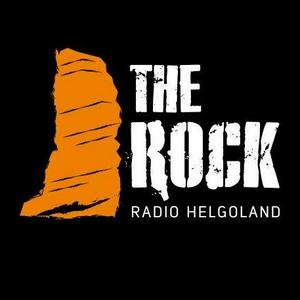

Vertraut von führenden Radiosendern & Verlagen


Radio Butler übernimmt alles, was ein echter Sender braucht: Musikauswahl, Moderation, Nachrichten, Wetter & Verkehr. Streamt rund um die Uhr – ganz ohne Studio oder Rundfunkerfahrung.
Vertraut von führenden Radiosendern & Verlagen

Du entscheidest, wie dein Sender klingt. Radio Butler hält ihn 24/7 verlässlich on air.
Wähle Genres, Stimmungen, Energie und Zielaltersgruppen. Die MusicBox sucht rund um die Uhr die passenden Songs aus und sorgt dafür, dass Titel nicht zu schnell wiederholt werden.
KI-Moderatoren begrüßen deine Hörer, sprechen über die Musik und deine Themen – in deiner Sprache, mit Stimmen, die du aussuchst. Natürlich, warm und nie um Worte verlegen.
Frische Weltnachrichten aus kuratierten Quellen zur Stunde, dazu Wetter und Verkehr für deine Region – vollautomatisch geschrieben, gesprochen und gesendet.
Sounder, Sweeper und Werbespots mit deinem Sendernamen und Claim – automatisch produziert, damit dein Sender vom ersten Tag an wie eine echte Marke klingt.
Bring eigene Themen, Texte und Inhalte ein, lege Moderationsthemen fest, sperre Songs, feile mit dem eingebauten Kompressor am Sound – alles bleibt jederzeit unter deiner Kontrolle.
Verbinden Sie Ihre Webseiten, RSS-Feeds oder internen Datenbanken. Radio Butler zieht automatisch relevante Inhalte und verwandelt sie in flüssige Moderationen.
Registrieren, bestätigen, fertig. Was früher ein ganzes Team und Studio brauchte, sind heute nur ein paar Klicks.
Bestimme Musik-Genres, wähle KI-Stimmen aus und binde deine eigenen Quellen oder Webseiten ein.
Dein Sender streamt unter eigener URL – ohne Studio, ohne Hardware und ohne Rundfunkerfahrung.
Egal ob Verleger oder Großunternehmen – wir haben das passende System.
Ihre Webseite wird zum vollfunktionalen Radiosender. Verwandeln Sie geschriebene Artikel, Eilmeldungen und Kolumnen automatisch in ein mitreißendes Audio-Format.
Stärken Sie Ihre Marke nach innen und außen. Ihr eigener Stream mit maßgeschneiderter Musik, News aus dem Unternehmen und gezielten Mitarbeiter-Informationen.
Alles inklusive – Radio Butler Engine, Infrastruktur & Support.
Schlüsselfertiges System für Verlage & Unternehmen
Füllen Sie das Formular aus. Wir melden uns innerhalb von 24 Stunden bei Ihnen.